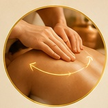
01
Ankommen
Der bewusste Beginn der Reise.
Eine Reise durch Berührung und Energie. Die ursprüngliche ICS Wissenswelt führt durch 14 aufeinander aufbauende Stationen – vom Ankommen und Vertrauen bis hin zu Verbindung und bewusstem Abschluss.

Der bewusste Beginn der Reise.
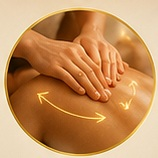
Ankommen im Körper und im Moment.
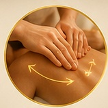
Raum für Wahrnehmung entstehen lassen.
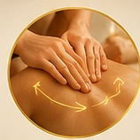
Spannung wahrnehmen und Raum geben.
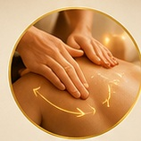
In einen ruhigeren inneren Rhythmus finden.
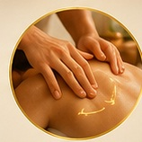
Lebendigkeit und Wahrnehmung ansprechen.
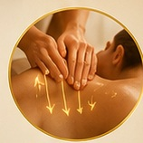
Gegensätze und Empfindungen ausgleichen.
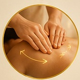
Bewegung und Durchlässigkeit wahrnehmen.
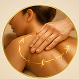
Stabilität und Präsenz erfahren.
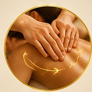
Ruhe und Loslassen zulassen.
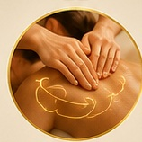
Bewusstsein und Körperempfinden neu ansprechen.
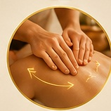
Das Erlebte bewusst zusammenführen und nachwirken lassen.
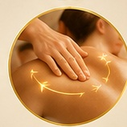
Körper, Wahrnehmung und inneres Erleben zusammenführen.
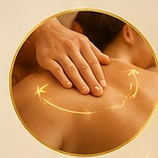
Die Reise bewusst beenden und nachspüren.
Die 14 Griffe stehen innerhalb von ICS nicht isoliert. Du kannst von hier direkt zur Selbstanwendung weitergehen, die gesamte Transformationsmassage entdecken oder BODY als größere Körperwelt öffnen.
Selbstanwendung entdecken → Zur Massagewelt → BODY entdecken →